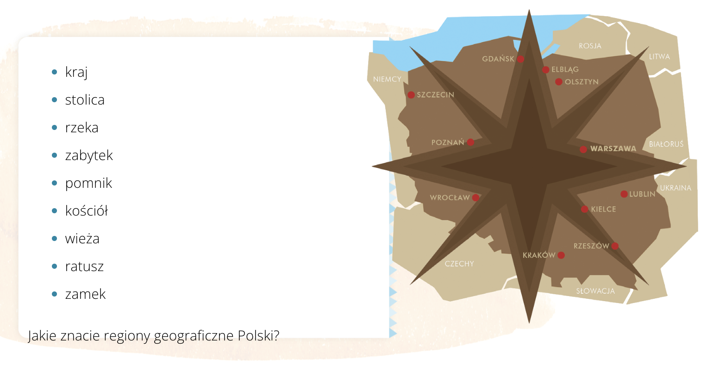
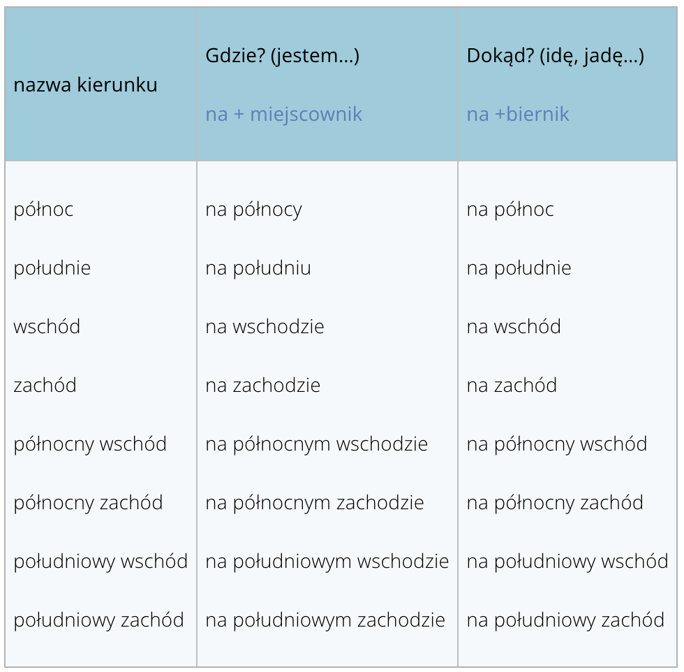

Javier marzył o podróżach weekendowych po Polsce. Niestety ani on, ani reszta grupy nie wie,
dokąd mogą pojechać. Dlatego mają warsztaty gegraficzne i nietypowe zadanie domowe: zrobić plan
wycieczki na weeekend. Najepszy projekt będzie zrealizowany!

Rzeczpospolita Polska (RP) leży w Europie Środkowej. Graniczy z Niemcami na zachodzie,
Czechami i Słowacją na południu, Ukrainą i Białorusią na wschodzie, z Litwą i z Rosją na
północy. Polska to duży kraj - dziewiąty w Europie pod względem wielkości terytorium.
Stolica Polski to Warszawa – centrum polityczne kraju. Tam mieszka Prezydent RP, tam
jest parlament i inne ważne instytucje. Symbolem Warszawy jest syrena.
Polska leży nad Morzem Bałtyckim, do którego wpływa Wisła, najdłuższa polska rzeka. Na
północnym zachodzie na Bałtyku leżą wyspy Uznam i Wolin. Na południu Polski znajdują się
góry: bardzo turystyczne Tatry z Zakopanem, ale też mniej popularne Beskidy oraz Sudety
na południowym zachodzie i Bieszczady na południowym wschodzie. Na północnym wschodzie
leży piękny region, Mazury: „Kraina tysiąca jezior” i zielonych lasów.
KIERUNKI GEOGRAFICZNE

Morskie Oko
największe jezioro tatrzańskie o krystalicznie czystej wodzie. Według legendy ma podziemne
połączenie z Adriatykiem – stąd nazwa. Powyżej jeziora stoi schronisko – jedno z
najstarszych i najpiękniejszych. Czerwony szlak idzie na Rysy (2499 m n.p.m. – nad poziomem
morza) – najwyższy szczyt polskich Tatr.
Wieliczka
ta kopalnia soli to jedyny obiekt górniczy na
świecie czynny bez przerwy od średniowiecza do dzisiaj. Znaną na całym świecie podziemną
Trasę Turystyczną zwiedza około miliona
turystów rocznie. Warto zobaczyć np. (na przykład) kaplicę świętej Kingi, patronki kopalni.
Stoi tam też jedyny na świecie pomnik Jana Pawła II (drugiego) wykuty w
soli.
Spływ Dunajcem
kanon atrakcji turystycznych: zwiedzić Polskę i nie spłynąć przełomem tej malowniczej rzeki
to tak jak być w Egipcie i nie odbyć rejsu po Nilu. Przełom ma jedną wielką zaletę – można
go oglądać płynąc meandrującą rzeką (tradycyjną tratwą z góralami, kajakiem lub pontonem)
albo idąc czy też jadąc na rowerze wzdłuż rzeki po słowackiej stronie.
Zamość
„Padwa Północy” lub „Miasto Arkad”
, w którym
w pełni zachował się jego renesansowy układ
urbanistyczny. Na Rynku, który miał pełnić
funkcje reprezentacyjne, a nie handlowe, stoi
ratusz i piękne arkadowe kamienice.
Najładniejsze – z kolorowymi fasadami –
wybudowali kupcy ormiańscy. Dawniej
mieszkało tu co najmniej dziesięć różnych
narodowości, w tym wielu Żydów.
Malbork
zamek wielkich mistrzów krzyżackich z XIV-XV
wieku otoczony murami obronnymi,
składający się z trzech części. Jeden z
największych zachowanych kompleksów
gotyckiej architektury na świecie. Kiedyś do
zamku wchodziło się przez 14 bram i cztery
mosty, a zamek posiadał wszystkie znane
wtedy elementy obronne.
Toruń
to stare miasto pomorskie ma łącznie 1100
budynków wpisanych do rejestru zabytków, z
czego prawie połowa to średniowieczne
gotyckie budowle z czerwonej cegły, np.
zespół gotyckich kamienic, m.in. (między
innymi) Dom Kopernika, ratusz, ruiny zamku
krzyżackiego, mury miejskie, gotycki most,
kilka wież (m.in. Krzywa Wieża).
Kanał Elbląski
żeglowna droga wodna i jedyny taki projekt
hydrotechniczny na świecie. Różnica
poziomów to ok. (około) 100 metrów, a
żegluga białej floty jest możliwa dzięki
systemowi specjalnych platform ciągniętych
po szynach mechanizmami linowymi
napędzanymi przez wodę. Wybudowany w
połowie XIX wieku miał połączyć szlakiem
żeglownym Prusy Wschodnie z Bałtykiem.
Puszcza Białowieska
ogromny kompleks leśny. Leży po obu
stronach granicy polsko-białoruskiej i jest
ostatnim tak wielkim naturalnym lasem.
Mieszkają tu żubry, „polskie bizony”
, które są wizytówką rezerwatu. Rośnie także tutaj
aromatyczna trawa dodawana do znanej
polskiej wódki „Żubrówki”.
Nowe mieszkanie Angeli. Znajomi pomagają w przeprowadzce.
Angela:
Bardzo wam dziękuję za pomoc!
Mami: Naprawdę nie ma za co! Cieszymy się, że wszystko dobrze się
skończyło.
Javier: O tak! Teraz masz piękne mieszkanie w centrum, więc w
weekendy, kiedy po imprezie spóźnimy się na nocny autobus, będziemy mogli wpaść do ciebie!!!
Angela:
Jeśli to nie będzie w każdy weekend, to zapraszam.
UWE: Macie rację! Mieszkanie jest naprawdę ładne! Małe, ale
dobrze rozplanowane!
Mami:
I ma piękne, ciepłe kolory. Pasują do ciebie.
🗣️ PRZYIMKI STATYCZNE/
СТАТИЧЕСКИЕ ПРЕДЛОГИ
Przyimki te określają położenie osoby lub przedmiotu, łączą się z miejscownikiem, narzędnikiem lub
dopełniaczem.
Эти предлоги обозначают местоположение человека или предмета, сочетаются с предложным,
творительным или родительным падежом.
MIEJSCOWNIK
NARZĘDNIK
DOPEŁNIACZ
na
przed
obok
w
za
koło
przy
nad
naprzeciwko
po
pod
na wprost
między
wzdłuż
PRZYKŁADY
Książka leży na stole.
Auto jest przed domem.
Pies śpi obok kota.
Ubrania wiszą w szafie.
Ogród jest za domem.
Kot śpi koło psa.
Student stoi przy tablicy.
Lampa wisi nad stołem.
Mieszkam naprzeciwko kościoła.
Kot chodzi po dachu.
Pies śpi pod stołem.
Siedzę na wprost ciebie.
Okulary leżą między książkami.
Domy stoją wzdłuż drogi.
⚠️ Внимание!
Предлоги obok и koło
Они означают одно и то же — "рядом с чем-то" .
Например:
obok szkoły — рядом со школой
koło domu — около дома
💡 Вместо них часто используют наречия:
blisko — близко
niedaleko — недалеко
Предлоги na wprost и naprzeciwko
Они очень похожи по значению — "напротив чего-то", но есть разница в
употреблении:
naprzeciwko — чаще используется в статичном значении (когда кто-то или что-то
находится напротив):
naprzeciwko szkoły — напротив школы
siedzi naprzeciwko mnie — сидит напротив меня
na wprost — чаще используется как динамический предлог (когда кто-то движется в
направлении):
Idź na wprost — Иди прямо
Usiądź na wprost mnie — Сядь напротив меня
⚠️ Но! В некоторых случаях na wprost может использоваться и в статичном
значении:
Łazienka jest na wprost — Туалет находится прямо напротив
Gladiatorzy stoją na wprost siebie — Гладиаторы стоят напротив друг друга
💬 КОМПЛИМЕНТЫ
Когда вы хотите кого-то похвалить, используйте:
▪️ Наречия (говорят о том, как что-то сделано):
▪️ Выражения:
▪️ Прилагательные:
dobrze — хорошо
podoba mi się — мне нравится
dobry — хороший
świetnie — отлично
smakuje mi — мне вкусно
ładny — красивый
ładnie — красиво
pasuje pani / panu / ci — вам / тебе идёт (подходит)